Alison Booth
Farmer, Lydia Hoyt. ed. The National Exposition Souvenir: What America Owes to Woman. Introduction by Julia Ward Howe. Chicago: Charles Wells Moulton, 1893. Buffalo, NY: n.p., 1893.
Chapter titles: What America Owes to Isabella of Castile and Madame La Fayette; Columbus at Sante Fe; The Women of Plymouth Colony; The Lady Arabella; Puritan Womanhood: A Power in America; The Women of the American Revolution; Autobiographical Sketch; Wives of the Presidents; Wives and Daughters in the Home; Domestic Science in American Homes; Clergymen’s Wives; The Wives of Army Officers; The American Salon; Social Leaders of Washington; The Southern Women, Past and Present; Physical Culture of American Women; The American Girl, Past and Present; Every-day Women; Farmers’ Wives and Daughters; Women in Literature and Poetry; Women Fiction Writers of America; Women Journalists in America; Women in Education and Science; Kindergartens; Women as Teachers; Massachusetts Normal Schools; Wellesly College Towards Liberal Education; An American Queen; Sketch of Maria Mitchell; Women’s Work at the Harvard Observatory; Women’s Progress; The Work of Women During the War; Women’s Work for Indians; The Woman’s Club Movement; The Influence of Women in American Politics; Woman’s Work in the Church; Working Girls’ Clubs; Woman’s National Christian Temperance Union; Young Women’s Christian Temperance Work; Hospitals, Mission Schools, and Other Charities; Sketch of Dorothea Lynde Dix; Two Women I have known; Women in Medicine; Women in Law; American Women of the Drama; Women in Business and Trade; Queens of the Shop, the Workroom and the Tenement; Women Clerks in New York; Women in Art and Music; Women Artists; Women Art Patrons; Address at the Dedicatory Ceremonies; Ode: Columbia’s Banner; The Board of Lady Managers; The Woman’s Branch of the World’s Congress Auxillary; The Woman’s Building; The Children’s Building; Exhibits by Women.
Multiple female contributors, including Lucy Larcom, Mrs. Ulysses S. Grant, Linda T. Guilford. “Some Women in American History”: Isabella of Castile and Madame de Lafayette. Some collective-anonymous chapters: “The Women of Plymouth Colony”; “Puritan Womanhood: A Power in America”; “Women in the Home”; “Women in Literature”; “Women in Education and Science”; “Women in Philanthropy, Church Work, Home Missions, and Charities”; "Women in Professions, Business, and Trade." Like Eagle, The Congress of Women (1894), a record associated with World's Columbian Exposition in Chicago.
-
 Martha Washington
Martha Washington -
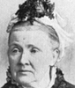Mrs. Julia Ward Howe
-
Mrs. Lydia Hoyt Farmer
-
 Mrs. Jane G. Austin
Mrs. Jane G. Austin -
 Mrs. Lucy Larcom
Mrs. Lucy Larcom -
 Mrs. Elroy M. Avery
Mrs. Elroy M. Avery -
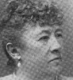Mrs. Ulysses S. Grant
-
 Mrs. Rutherford B. Hayes
Mrs. Rutherford B. Hayes -
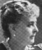Mrs. Benjamin Harrison
-
 Mrs. Grover Cleveland
Mrs. Grover Cleveland -
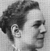Mrs. Anges Bailey Ormsbee
-
 Mrs. Henry Ward Beecher
Mrs. Henry Ward Beecher -
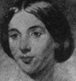Mrs. Jessie Benton Fremont
-
 Mrs. Dorothy Todd Madison
Mrs. Dorothy Todd Madison -
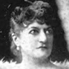Mrs. Frank Leslie
-
 Mrs. Annie Jenness Miller
Mrs. Annie Jenness Miller -
Miss Jennie E. Hooker
-
Mrs. Mary Mapes Dodge
-
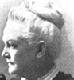Mrs. John A. Logan
-
 Mrs. Harriet M. Lothrop
Mrs. Harriet M. Lothrop -
 Mrs. Ellen Olney Kirk
Mrs. Ellen Olney Kirk -
 Miss Susan E. Dickinson
Miss Susan E. Dickinson -
 Miss Eliza Hardy Lord
Miss Eliza Hardy Lord -
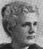Miss Anne Eugenia Morgan
-
Mrs. Frances Fisher Wood
-
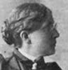Mrs. Frances E. Willard
-
 Mrs. Mary A. Livermore
Mrs. Mary A. Livermore -
 Mrs. Amelia Stone Quinton
Mrs. Amelia Stone Quinton -
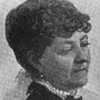Mrs. J. C. Croly
-
 Mrs. J. Ellen Foster
Mrs. J. Ellen Foster -
Mrs. Frances J. Barnes
-
Miss L. Elizabeth Price
-
Mrs. Charles Henrotin
-
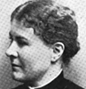Mrs. Ada M. Bittenbender
-
 Miss Lillian Whiting
Miss Lillian Whiting -
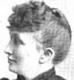Mrs. Mathilda B. Carse
-
 Marquise Clara Lanza
Marquise Clara Lanza -
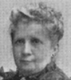Miss Helen Evertson Smith
-
 Mrs. Potter Palmer
Mrs. Potter Palmer
Search OCLC WorldCat for this title.
Search Google Books for this title.